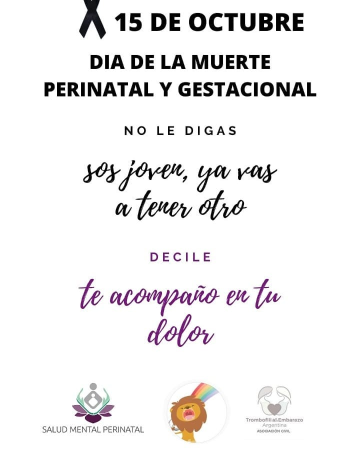
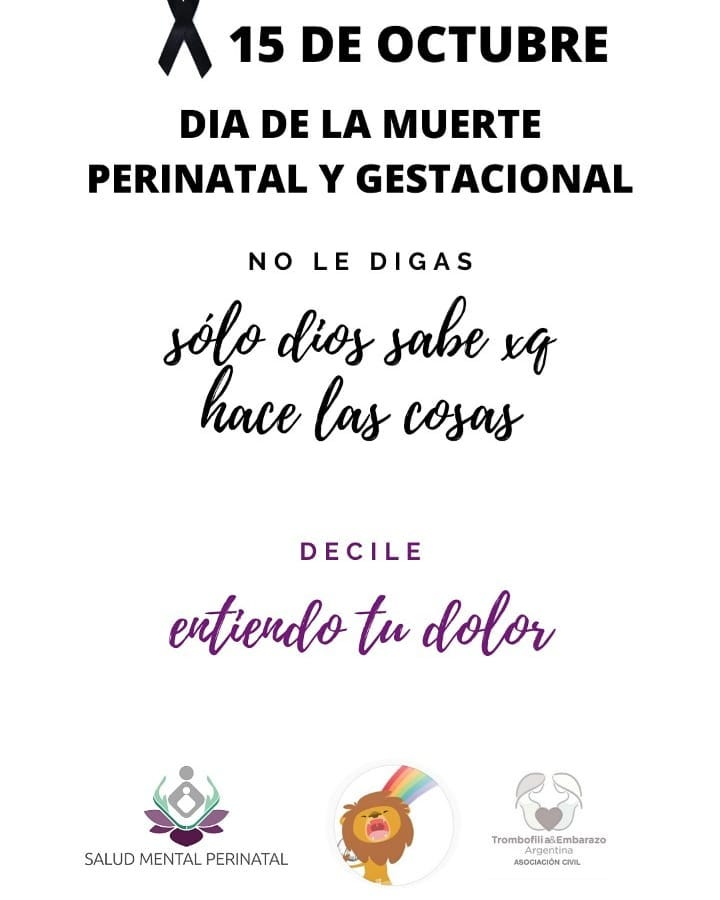
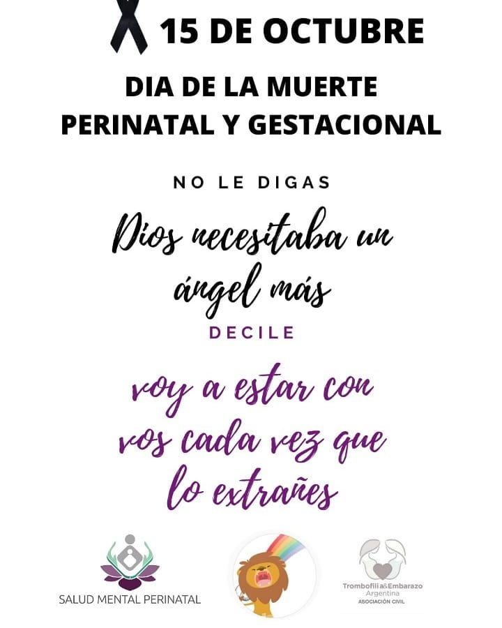
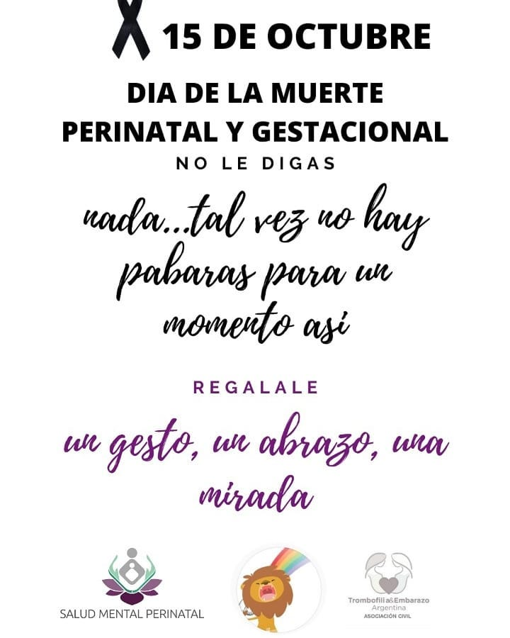

Grupo cerrado de contención para madres y padres en duelo. Reuniones segundo miercoles de cada mes.
La asociación conforma un grupo de terapia para afrontar las pérdidas ocacionadas por la falta de diagnóstico y tratamiento. El soporte se brinda mediante reuniones informadas en el grupo cerrado de facebook y mediante charlas de divulgación en instagram.
La muerte perinatal comprende la muerte gestacional y la muerte neonatal en muy diferentes supuestos. En todos ellos, estamos contemplando la pérdida de un hijo, de un bebé, de un proyecto truncado y multitud de aspectos asociados a ello. Estamos hablando de bebés que fallecen durante el embarazo, en el parto o a los pocos días de nacer.
El duelo perinatal tiene tres características que lo hacen especial: es un duelo negado para el que no hay un ritual y que muchas personas llevan de forma íntima, es complejo porqué estás preparándote para recibir vida y llega la muerte, y es desautorizado socialmente porqué carece de reconocimiento.
Podemos hablar para sanar.